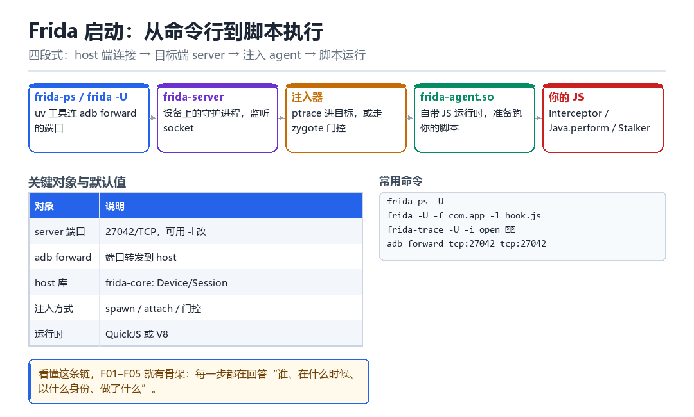

Android frida 源码讲解
从 frida 启动开始
不背 API，只讲清“谁在什么时候做了什么”。
10.1 五段式启动

- host 端：
frida-tools通过frida-core连接设备（USB 走 adb forward，或直接 TCP）。 - 设备端 server：
frida-server监听端口，管理 Session、进程枚举、注入。 - 注入器：ptrace 进目标，或走 zygote 门控；把 agent so 映射进目标地址空间。
- agent：自带 Gum（插桩引擎）与 JS 运行时（QuickJS 或 V8），跑你的脚本。
10.2 三个对象模型
| 对象 | 生命周期 | 能做什么 |
|---|---|---|
| Device | 整个连接期间 | 枚举进程、spawn、attach |
| Session | 一次 attach 到 detach | 创建 Script、枚举模块 |
| Script | 一次 load 到 unload | 执行 JS、收发消息 |
理解这三层的好处：出问题时能快速定位是哪一层断了。脚本没反应 → 先看 Session 是否建立；Session 建立了但 hook 不生效 → 看 Script 是否加载成功；加载成功但没回调 → 看 hook 是否真的挂上了。
10.3 server 端的通信结构
server 用 GLib 的 GSocket / GDBusConnection 做对象与传输。不必背具体类名，但要记住一条：host 与 agent 之间的每条消息，都要经过 server 中转。这也是为什么 server 被杀掉，脚本会立刻失联。
frida-ps -U # 能列进程 = server 通了
frida -U -f com.app -l a.js # 能进 = 注入通了
# a.js 里第一句永远写这个：
# send('alive');
# 能在 host 看到 alive，才算真的跑起来了10.4 本章自测
- Device / Session / Script 三层各管什么？
- server 被杀掉后，已经注入的 agent 会怎样？
- 为什么建议每个脚本第一句都写 send？
- 如果
frida-ps -U能列进程，但 attach 失败，问题可能在哪一层？
10.5 深入：agent 是怎么被“放”进去的
frida-server 支持多种注入方式，选择依据是“目标状态”与“权限”。
| 方式 | 适用 | 代价 |
|---|---|---|
| ptrace 注入 | 普通 attach | 需要权限，有痕迹 |
| zygote 门控 | 要在最早期介入 | 要改 zygote |
| preload | 能控制启动参数时 | 需要改 rc / 环境变量 |
| 调试器附加 | 开发阶段 | 会留下调试状态 |
10.6 源码阅读的入口建议
- 先看
frida-core里的 Device / Session 抽象，理解“一次连接”的模型。 - 再看 server 侧的注入实现，理解“agent 如何被映射”。
- 然后看
frida-gum里的 Interceptor，理解 hook 的实现。 - 最后看 JS 运行时绑定（QuickJS / V8），理解脚本如何被调度。
10.7 原理推演：为什么 agent 能“自带运行时”
因为 agent 是一个完整的 so，它自己链接了 JS 引擎（静态链接进 agent）。所以它不依赖目标进程里有没有 V8、有没有 QuickJS——它把引擎一起搬进去了。
| 依赖 | 来源 | 是否依赖目标 |
|---|---|---|
| JS 引擎 | 静态链接在 agent 里 | 否 |
| GLib | 静态链接或自带 | 否 |
| libc | 目标进程已有 | 是（但版本兼容） |
| libc++ | 通常静态链接 | 否 |
这也解释了 agent 为什么这么大（几 MB 到几十 MB）：它把整个运行时都打包了。而“体积大”本身就是个检测信号——映射进目标后，maps 里会多出一大段。
10.8 数据细节：agent 的映射布局
7f0000000000-7f0000100000 r-xp <anonymous> # 代码
7f0000100000-7f0000200000 r--p <anonymous> # 只读数据
7f0000200000-7f0000300000 rw-p <anonymous> # 可写数据
# 注意：全部是 anonymous，没有路径这就是 F11 里“Gum ELF 匿名映射”那一条的来源。它的处理思路是：把 agent 拆成多段，塞进已有合法 so 的 padding 区域，或者伪装成 [anon:dalvik-...] 之类的系统命名。
在 host 敲下回车的那一秒
五层结构，任何一层断掉都会表现为“脚本没反应”

终端里 frida -U -f com.target.app -l a.js 敲下去，到屏幕上蹦出第一行 log，大约一秒。这一秒里发生了五次换手：host 上的 Python 客户端找到设备，设备上的 frida-server 接下请求，注入器把一段 so 塞进刚被 spawn 出来、还停在 zygote 门口的进程，这段 so 在目标进程里起了一个 JS 引擎，最后才轮到你写的那行 send('alive')。把这一秒按帧拆开，「Device / Session / Script 三层」就不再是三个名词，而是三个具体的交接点。
最容易搞错的一件事先摆在前面：你写的 JS 从来不在 host 上跑。它在目标进程的地址空间里执行，由 agent 自带的 QuickJS（部分构建用 V8）解释；console.log 和 send 只是把消息序列化后，经 server 中转运回 host 显示。这个事实决定了后面所有排查顺序。
一条命令穿过五段链路
- `frida-tools`（host） → 对
frida-core的DeviceManager→ 通过 USB 走adb forward tcp:27042，或直接 TCP 连设备端口 → 结果：拿到一个Device句柄，能枚举进程。 - `Device.spawn()` → 对
frida-server→ 发 spawn 请求与包名 → 结果：server 借 zygote 门控把目标进程创建出来并暂时挂住，等 agent 就位。 - 注入器（server 侧） → 对目标进程 → ptrace 附加或走 spawn 时的早期注入，把
frida-agent.so映射进去 → 结果：目标地址空间里多了一个模块，它的入口_frida_agent_main被调用。 - agent 初始化 → 对自身 → 建 Gum 引擎（
Interceptor/Stalker/MemoryAccessMonitor）、起 JS 运行时、开一条回到 server 的控制通道 → 结果：一个能执行脚本、能收发消息的运行时活了。 - `Session.createScript()` + `load()` → 对 JS 运行时 → 把
a.js的源码编译并求值 → 结果：脚本第一句send('alive')执行，消息经 agent → server → host 三段中转到终端。 - 脚本运行期 → 对
Interceptor.attach等 API → 转成 Gum 的插桩动作 → 结果：hook 真正挂到目标函数上，回调在目标进程里被触发。
断在哪一层，症状完全不同
- 连不上设备 → 对
DeviceManager→ 报unable to connect to remote frida-server→ 结果：还没进到注入，先查 server 与端口转发。 - 能枚举进程、spawn 失败 → 对
Device.spawn→ 报包名找不到或 SELinux 拒绝 → 结果：server 活着但没拿到进程，查包名与权限。 - 能 attach、脚本没反应 → 对
Script.load→ 多半是 JS 语法错或目标类还没加载 → 结果：以脚本第一句send是否到达为分界。 - 有 hook 但回调不触发 → 对 Gum 的
Interceptor→ 目标函数地址错、或被 JIT 内联 → 结果：脚本活着，插桩点没命中。
动手：把五段链路逐段点亮
# 1) 推 server 并在设备上后台运行（按 ABI 选对二进制）
adb push frida-server-16.x-android-arm64 /data/local/tmp/fs
adb shell chmod 755 /data/local/tmp/fs
adb shell 'nohup /data/local/tmp/fs >/dev/null 2>&1 &'
adb forward tcp:27042 tcp:27042
# 2) 第一段：Device 通不通
frida-ps -U | head -20
# 3) 第五段：脚本有没有真的在目标里跑
# probe.js 内容：
# send('alive');
# console.log('pid =', Process.id);
# recv('ping', m => send('pong:' + m.v));
frida -U -f com.target.app -l probe.js
# 进 REPL 后若停在等待态，输入 %resume 让目标继续成功：frida-ps -U 列出进程列表（说明 Device 层与 server 通）、host 看到 alive 与 pid = <目标 pid>（说明 agent、JS 运行时、消息链路全通）、在 REPL 里发 ping 能收到 pong（说明双向通道也通）。失败按报错逐层定位：Failed to enumerate processes: unable to connect to remote frida-server 是 server 没起来或 adb forward 没做，补 adb shell ps -A | grep fs；Failed to spawn: unable to find application 是包名写错，用 adb shell pm list packages | grep target 核对；SyntaxError 停在 Script.load，agent 其实已经进去了；而「一切正常却没有 alive」往往只是 spawn 后进程被暂停、脚本还没被 resume——输入 %resume 即可。
| 报错 / 现象 | 断在哪一段 | 一条命令定位 |
|---|---|---|
| unable to connect to remote frida-server | host → server | adb shell ps -A | grep fs |
| unable to find application | Device.spawn | pm list packages | grep target |
| SyntaxError / script failed to load | Script.load | 把脚本缩到只剩一行 send |
| alive 没出现，但无报错 | spawn 后未 resume | REPL 里输入 %resume |
| server 被 kill 后脚本失联 | agent 的控制通道 | frida-ps -U 会立刻失败 |
把「Device → Session → Script」这条交接链记住。第 09 章讲的 inline hook，在本章落地为 agent 里 Gum.Interceptor 的一次调用；第 11 章会把这个 agent 带来的线程、模块、匿名映射逐一列成检测项——本章在装东西，下一章专门找这些东西；第三部则会把 frida-core、frida-gum、frida-gumjs 三个仓库的分工逐层拆开。